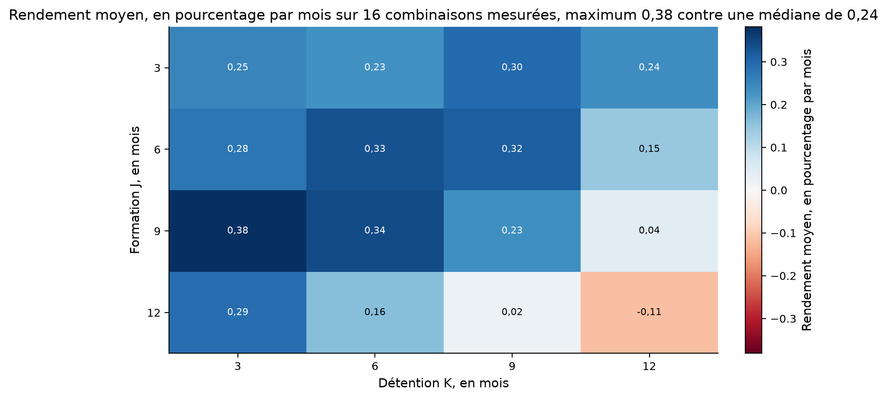
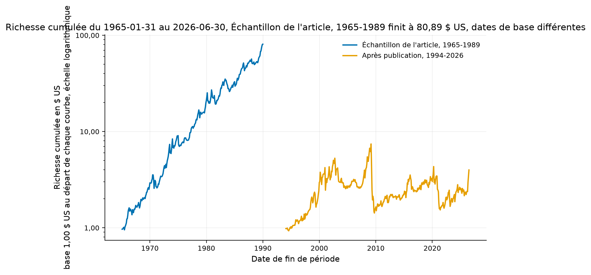
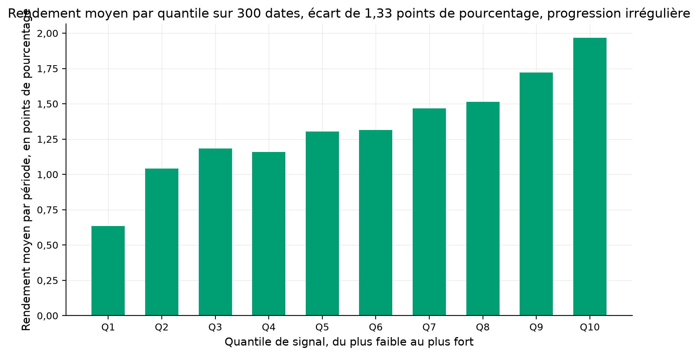
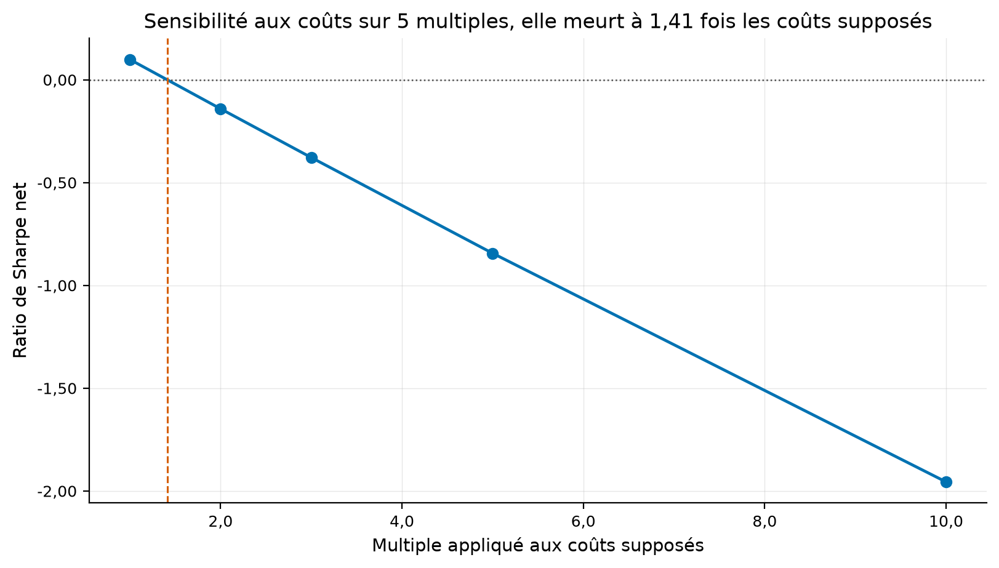
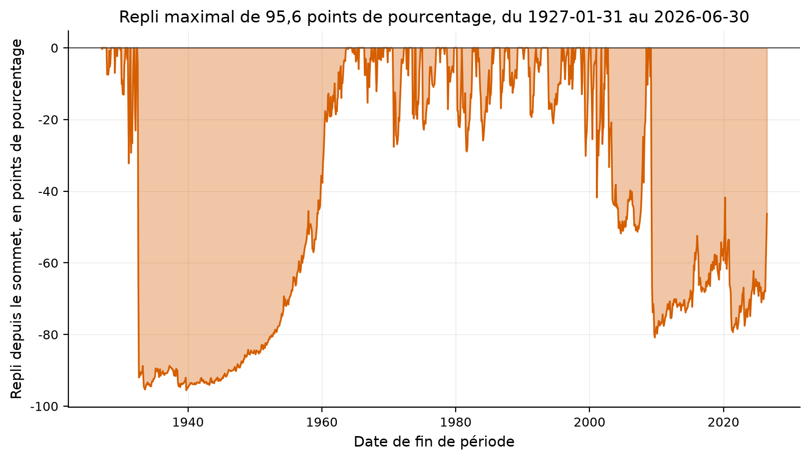
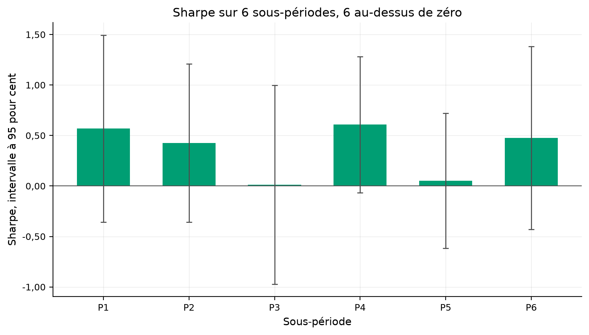
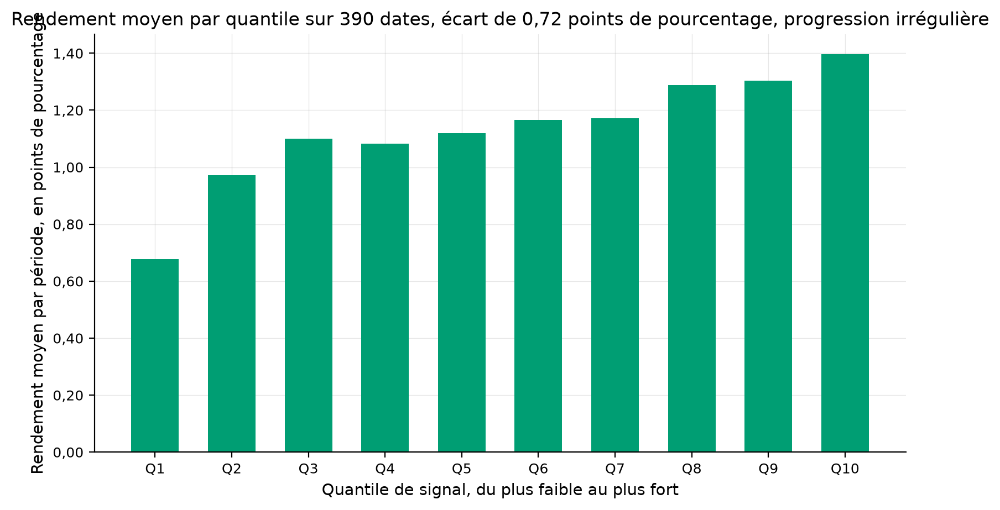
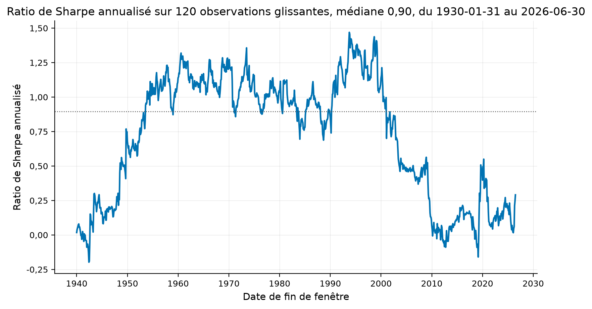
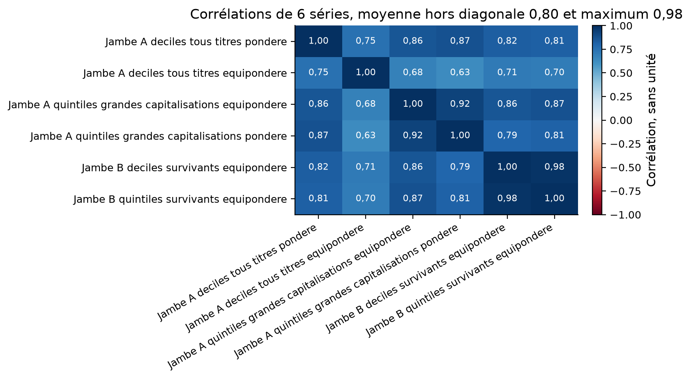
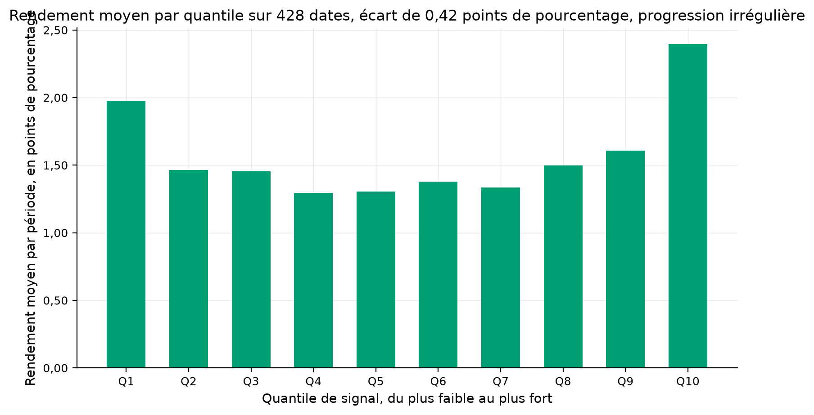

Verdict : EXPERIMENTAL
Acheter le décile des titres au plus fort rendement passé et vendre celui au plus faible rendement passé rapporte un écart positif, et cet écart survit à sa publication en 1993.
Jegadeesh, N. et Titman, S. (1993). Returns to buying winners and selling losers: implications for stock market efficiency. The Journal of Finance, 48(1), 65-91. doi:10.1111/j.1540-6261.1993.tb04702.x
Classement croissant des titres sur leur rendement des J derniers mois, dix déciles équipondérés, achat du dernier et vente du premier, cohortes qui se chevauchent sur K mois.
Jambe A, les déciles 12-2 de Kenneth French construits sur CRSP, titres radiés compris, de 1927-01 à la dernière date publiée. Jambe B, les prix quotidiens ajustés des 503 membres actuels du S&P 500, chez Yahoo.
| symbol | break_date | break_return_pct | months_dropped |
|---|---|---|---|
| HUBB | 1994-10-31 | 885.931158 | 117 |
| NVR | 1993-10-29 | 2600.000000 | 105 |
| symbol | first_price_date | n_sessions |
|---|---|---|
| A | 1999-11-18 | 6734 |
| AAPL | 1985-01-02 | 10496 |
| ABBV | 2013-01-02 | 3435 |
| ABNB | 2020-12-10 | 1435 |
| ABT | 1985-01-02 | 10495 |
| ACGL | 1995-09-14 | 7790 |
| ACN | 2001-07-19 | 6315 |
| ADBE | 1986-08-13 | 10088 |
| ADI | 1985-01-02 | 10496 |
| ADM | 1985-01-02 | 10495 |
| ADP | 1985-01-02 | 10495 |
| ADSK | 1985-06-28 | 10371 |
| AEE | 1998-01-02 | 7208 |
| AEP | 1985-01-02 | 10495 |
| AES | 1991-06-26 | 8857 |
| AFL | 1985-01-02 | 10495 |
| AIG | 1985-01-02 | 10495 |
| AIZ | 2004-02-05 | 5677 |
| AJG | 1985-01-02 | 10495 |
| AKAM | 1999-10-29 | 6748 |
| ALB | 1994-02-22 | 8184 |
| ALGN | 2001-01-30 | 6433 |
| ALL | 1993-06-03 | 8367 |
| ALLE | 2013-11-18 | 3213 |
| AMAT | 1985-01-02 | 10495 |
| AMCR | 2012-05-15 | 3593 |
| AMD | 1985-01-02 | 10496 |
| AME | 1985-01-02 | 10495 |
| AMGN | 1985-01-02 | 10495 |
| AMP | 2005-09-15 | 5271 |
| AMT | 1998-02-27 | 7170 |
| AMZN | 1997-05-15 | 7369 |
| ANET | 2014-06-06 | 3076 |
| AON | 1985-01-02 | 10495 |
| AOS | 1985-01-02 | 10495 |
| APA | 1985-01-02 | 10495 |
| APD | 1985-01-02 | 10495 |
| APH | 1991-11-08 | 8732 |
| APO | 2011-03-30 | 3877 |
| APP | 2021-04-15 | 1350 |
| APTV | 2011-11-17 | 3715 |
| ARE | 1997-05-28 | 7360 |
| ARES | 2014-05-02 | 3100 |
| ATO | 1985-01-02 | 10495 |
| AVGO | 2009-08-06 | 4293 |
| AVY | 1985-01-02 | 10495 |
| AWK | 2008-04-23 | 4617 |
| AXON | 2001-06-19 | 6336 |
| AXP | 1985-01-02 | 10495 |
| AZO | 1991-04-02 | 8917 |
| BA | 1985-01-02 | 10495 |
| BAC | 1985-01-02 | 10495 |
| BALL | 1985-01-02 | 10495 |
| BAX | 1985-01-02 | 10495 |
| BBY | 1985-04-18 | 10421 |
| BDX | 1985-01-02 | 10495 |
| BEN | 1985-01-02 | 10495 |
| BF-B | 1985-01-02 | 10495 |
| BG | 2001-08-02 | 6305 |
| BIIB | 1991-09-17 | 8800 |
| BKNG | 1999-03-31 | 6896 |
| BKR | 1987-04-06 | 9925 |
| BLDR | 2005-06-28 | 5326 |
| BLK | 1999-10-01 | 6768 |
| BMY | 1985-01-02 | 10495 |
| BNY | 1985-01-02 | 10495 |
| BR | 2007-03-22 | 4891 |
| BRK-B | 1996-05-09 | 7625 |
| BRO | 1985-01-02 | 10495 |
| BSX | 1992-05-19 | 8630 |
| BX | 2007-06-22 | 4827 |
| BXP | 1997-06-18 | 7345 |
| C | 1985-01-02 | 10495 |
| CAH | 1985-01-02 | 10495 |
| CARR | 2020-03-19 | 1620 |
| CASY | 1985-01-02 | 10495 |
| CAT | 1985-01-02 | 10495 |
| CB | 1993-03-25 | 8415 |
| CBOE | 2010-06-15 | 4077 |
| CBRE | 2004-06-10 | 5590 |
| CCI | 1998-08-18 | 7051 |
| CCL | 1987-07-24 | 9850 |
| CDNS | 1987-06-10 | 9880 |
| CDW | 2013-06-27 | 3313 |
| CEG | 2022-01-19 | 1157 |
| CF | 2005-08-11 | 5295 |
| CFG | 2014-09-24 | 3000 |
| CHD | 1985-01-02 | 10495 |
| CHRW | 1997-10-16 | 7261 |
| CHTR | 2010-01-05 | 4188 |
| CI | 1985-01-02 | 10495 |
| CIEN | 1997-02-07 | 7435 |
| CINF | 1985-01-02 | 10495 |
| CL | 1985-01-02 | 10495 |
| CLX | 1985-01-02 | 10495 |
| CMCSA | 1985-01-02 | 10495 |
| CME | 2002-12-06 | 5969 |
| CMG | 2006-01-26 | 5180 |
| CMI | 1985-01-02 | 10495 |
| CMS | 1985-01-02 | 10495 |
| CNC | 2001-12-13 | 6216 |
| CNP | 1985-01-02 | 10495 |
| COF | 1994-11-16 | 7998 |
| COHR | 1987-10-02 | 9801 |
| COIN | 2021-04-14 | 1352 |
| COO | 1985-01-02 | 10495 |
| COP | 1985-01-02 | 10495 |
| COR | 1995-04-04 | 7903 |
| COST | 1986-07-09 | 10113 |
| CPAY | 2010-12-15 | 3949 |
| CPRT | 1994-03-17 | 8167 |
| CPT | 1993-07-22 | 8333 |
| CRH | 1989-07-13 | 9351 |
| CRL | 2000-06-23 | 6584 |
| CRM | 2004-06-23 | 5583 |
| CRWD | 2019-06-12 | 1815 |
| CSCO | 1990-02-16 | 9199 |
| CSGP | 1998-07-01 | 7084 |
| CSX | 1985-01-02 | 10495 |
| CTAS | 1985-01-02 | 10495 |
| CTSH | 1998-06-19 | 7092 |
| CTVA | 2019-05-24 | 1826 |
| CVNA | 2017-04-28 | 2347 |
| CVS | 1985-01-02 | 10495 |
| CVX | 1985-01-02 | 10496 |
| D | 1985-01-02 | 10495 |
| DAL | 2007-05-03 | 4862 |
| DASH | 2020-12-09 | 1436 |
| DD | 1985-01-02 | 10495 |
| DDOG | 2019-09-19 | 1745 |
| DE | 1985-01-02 | 10495 |
| DECK | 1993-10-15 | 8273 |
| DELL | 2016-08-17 | 2523 |
| DG | 2009-11-13 | 4222 |
| DGX | 1996-12-17 | 7471 |
| DHI | 1992-06-05 | 8618 |
| DHR | 1985-01-02 | 10495 |
| DIS | 1985-01-02 | 10495 |
| DLR | 2004-10-29 | 5492 |
| DLTR | 1995-03-07 | 7923 |
| DOC | 1985-05-23 | 10396 |
| DOV | 1985-01-02 | 10495 |
| DOW | 2019-03-20 | 1872 |
| DPZ | 2004-07-13 | 5569 |
| DRI | 1995-05-09 | 7879 |
| DTE | 1985-01-02 | 10495 |
| DUK | 1985-01-02 | 10495 |
| DVA | 1995-10-31 | 7757 |
| DVN | 1985-07-22 | 10356 |
| DXCM | 2005-04-14 | 5378 |
| EBAY | 1998-09-24 | 7025 |
| ECHO | 2008-01-02 | 4694 |
| ECL | 1985-01-02 | 10495 |
| ED | 1985-01-02 | 10495 |
| EFX | 1985-01-02 | 10495 |
| EG | 1995-10-03 | 7777 |
| EIX | 1985-01-02 | 10495 |
| EL | 1995-11-17 | 7744 |
| ELV | 2001-10-30 | 6247 |
| EME | 1995-01-10 | 7962 |
| EMR | 1985-01-02 | 10495 |
| EOG | 1989-10-04 | 9293 |
| EQIX | 2000-08-11 | 6550 |
| EQT | 1985-01-02 | 10495 |
| ERIE | 1995-10-02 | 7778 |
| ES | 1985-01-02 | 10495 |
| ESS | 1994-06-07 | 8112 |
| ETN | 1985-01-02 | 10495 |
| ETR | 1985-01-02 | 10495 |
| EVRG | 1985-01-02 | 10495 |
| EW | 2000-03-27 | 6646 |
| EXC | 1985-01-02 | 10495 |
| EXE | 2021-02-10 | 1394 |
| EXPD | 1985-01-02 | 10495 |
| EXPE | 2005-07-21 | 5310 |
| EXR | 2004-08-16 | 5545 |
| F | 1985-01-02 | 10496 |
| FANG | 2012-10-12 | 3488 |
| FAST | 1987-08-20 | 9830 |
| FCX | 1995-07-10 | 7837 |
| FDS | 1996-06-28 | 7590 |
| FDX | 1985-01-02 | 10495 |
| FDXF | 2026-05-27 | 66 |
| FE | 1997-11-10 | 7244 |
| FERG | 2010-01-05 | 4188 |
| FFIV | 1999-06-04 | 6851 |
| FICO | 1987-07-22 | 9851 |
| FIS | 2001-06-20 | 6335 |
| FISV | 1986-09-25 | 10057 |
| FITB | 1985-01-02 | 10495 |
| FIX | 1997-06-27 | 7338 |
| FLEX | 1994-03-18 | 8166 |
| FOX | 2019-03-13 | 1877 |
| FOXA | 2019-03-12 | 1878 |
| FRT | 1985-01-02 | 10495 |
| FSLR | 2006-11-17 | 4974 |
| FTNT | 2009-11-18 | 4219 |
| FTV | 2016-07-05 | 2553 |
| GD | 1985-01-02 | 10495 |
| GDDY | 2015-03-31 | 2871 |
| GE | 1985-01-02 | 10495 |
| GEHC | 2022-12-15 | 928 |
| GEN | 1989-06-23 | 9364 |
| GEV | 2024-03-27 | 608 |
| GILD | 1992-01-22 | 8712 |
| GIS | 1985-01-02 | 10495 |
| GL | 1985-01-02 | 10495 |
| GLW | 1985-01-02 | 10495 |
| GM | 2010-11-18 | 3967 |
| GNRC | 2010-02-11 | 4162 |
| GOOG | 2004-08-19 | 5543 |
| GOOGL | 2004-08-19 | 5543 |
| GPC | 1985-01-02 | 10495 |
| GPN | 2001-01-16 | 6443 |
| GRMN | 2000-12-08 | 6467 |
| GS | 1999-05-04 | 6873 |
| GWW | 1985-01-02 | 10495 |
| HAL | 1985-01-02 | 10496 |
| HAS | 1985-01-02 | 10495 |
| HBAN | 1985-01-02 | 10495 |
| HCA | 2011-03-10 | 3891 |
| HD | 1985-01-02 | 10495 |
| HIG | 1995-12-15 | 7725 |
| HII | 2011-03-22 | 3883 |
| HLT | 2013-12-12 | 3196 |
| HON | 1985-01-02 | 10495 |
| HONA | 2026-06-15 | 53 |
| HOOD | 2021-07-29 | 1278 |
| HPE | 2015-10-19 | 2732 |
| HPQ | 1985-01-02 | 10495 |
| HRL | 1985-01-02 | 10495 |
| HSIC | 1995-11-03 | 7754 |
| HST | 1985-01-02 | 10495 |
| HSY | 1985-01-02 | 10495 |
| HUBB | 1985-01-02 | 10496 |
| HUM | 1985-01-02 | 10495 |
| HWM | 2016-11-01 | 2469 |
| IBKR | 2007-05-04 | 4861 |
| IBM | 1985-01-02 | 10495 |
| ICE | 2005-11-16 | 5227 |
| IDXX | 1991-06-21 | 8860 |
| IEX | 1989-06-02 | 9379 |
| IFF | 1985-01-02 | 10495 |
| INCY | 1993-11-04 | 8259 |
| INTC | 1985-01-02 | 10496 |
| INTU | 1993-03-12 | 8424 |
| INVH | 2017-02-01 | 2407 |
| IP | 1985-01-02 | 10495 |
| IQV | 2013-05-09 | 3347 |
| IR | 2017-05-12 | 2337 |
| IRM | 1996-02-01 | 7693 |
| ISRG | 2000-06-16 | 6589 |
| IT | 1993-10-05 | 8281 |
| ITW | 1985-01-02 | 10495 |
| IVZ | 1995-08-25 | 7803 |
| J | 1985-01-02 | 10495 |
| JBHT | 1985-01-02 | 10495 |
| JBL | 1993-05-03 | 8389 |
| JCI | 1987-09-28 | 9804 |
| JKHY | 1985-11-20 | 10271 |
| JNJ | 1985-01-02 | 10495 |
| JPM | 1985-01-02 | 10495 |
| KDP | 2008-05-07 | 4607 |
| KEY | 1987-11-05 | 9776 |
| KEYS | 2014-10-20 | 2982 |
| KHC | 2015-07-06 | 2805 |
| KIM | 1991-11-22 | 8752 |
| KKR | 2010-07-15 | 4056 |
| KLAC | 1985-01-02 | 10496 |
| KMB | 1985-01-02 | 10495 |
| KMI | 2011-02-11 | 3909 |
| KO | 1985-01-02 | 10495 |
| KR | 1985-01-02 | 10495 |
| KVUE | 2023-05-04 | 833 |
| L | 1985-01-02 | 10495 |
| LDOS | 2006-10-17 | 4997 |
| LEN | 1985-01-02 | 10495 |
| LH | 1990-03-29 | 9171 |
| LHX | 1985-01-02 | 10495 |
| LII | 1999-07-29 | 6813 |
| LIN | 1992-06-17 | 8610 |
| LITE | 2015-07-23 | 2792 |
| LLY | 1985-01-02 | 10495 |
| LMT | 1985-01-02 | 10495 |
| LNT | 1985-01-02 | 10495 |
| LOW | 1985-01-02 | 10495 |
| LRCX | 1985-01-02 | 10495 |
| LULU | 2007-07-27 | 4804 |
| LUV | 1985-01-02 | 10495 |
| LVS | 2004-12-15 | 5460 |
| LYB | 2010-04-28 | 4110 |
| LYV | 2005-12-21 | 5203 |
| MA | 2006-05-25 | 5097 |
| MAA | 1994-01-28 | 8200 |
| MAR | 1998-03-23 | 7154 |
| MAS | 1985-01-02 | 10495 |
| MCD | 1985-01-02 | 10495 |
| MCHP | 1993-03-19 | 8420 |
| MCK | 1994-11-10 | 8002 |
| MCO | 1994-10-31 | 8010 |
| MDLZ | 2001-06-13 | 6340 |
| MDT | 1985-01-02 | 10495 |
| MET | 2000-04-05 | 6639 |
| META | 2012-05-18 | 3591 |
| MGM | 1988-05-02 | 9654 |
| MKC | 1985-01-02 | 10495 |
| MLM | 1994-02-17 | 8186 |
| MMM | 1985-01-02 | 10495 |
| MNST | 1985-12-09 | 10258 |
| MO | 1985-01-02 | 10495 |
| MOS | 1988-01-26 | 9721 |
| MPC | 2011-06-24 | 3817 |
| MPWR | 2004-11-19 | 5477 |
| MRK | 1985-01-02 | 10495 |
| MRNA | 2018-12-07 | 1942 |
| MRSH | 1985-01-02 | 10495 |
| MRVL | 2000-06-30 | 6580 |
| MS | 1993-02-23 | 8437 |
| MSCI | 2007-11-15 | 4725 |
| MSFT | 1986-03-13 | 10195 |
| MSI | 1985-01-02 | 10495 |
| MTB | 1985-01-02 | 10495 |
| MTD | 1997-11-14 | 7240 |
| MU | 1985-01-02 | 10496 |
| NCLH | 2013-01-18 | 3424 |
| NDAQ | 2002-07-01 | 6080 |
| NDSN | 1985-01-02 | 10495 |
| NEE | 1985-01-02 | 10495 |
| NEM | 1985-01-02 | 10495 |
| NFLX | 2002-05-23 | 6107 |
| NI | 1985-01-02 | 10495 |
| NKE | 1985-01-02 | 10496 |
| NOC | 1985-01-02 | 10495 |
| NOW | 2012-06-29 | 3562 |
| NRG | 2003-12-02 | 5721 |
| NSC | 1985-01-02 | 10495 |
| NTAP | 1995-11-21 | 7742 |
| NTRS | 1985-01-02 | 10495 |
| NUE | 1985-01-02 | 10495 |
| NVDA | 1999-01-22 | 6944 |
| NVR | 1985-07-22 | 10356 |
| NWS | 2013-06-19 | 3319 |
| NWSA | 2013-06-19 | 3319 |
| NXPI | 2010-08-06 | 4041 |
| O | 1994-10-18 | 8019 |
| ODFL | 1991-10-24 | 8773 |
| OKE | 1985-01-02 | 10495 |
| OMC | 1985-01-02 | 10495 |
| ON | 2000-05-02 | 6622 |
| ORCL | 1986-03-12 | 10196 |
| ORLY | 1993-04-23 | 8395 |
| OTIS | 2020-03-19 | 1620 |
| OXY | 1985-01-02 | 10495 |
| PANW | 2012-07-20 | 3547 |
| PAYX | 1985-01-02 | 10495 |
| PCAR | 1985-01-02 | 10495 |
| PCG | 1985-01-02 | 10496 |
| PEG | 1985-01-02 | 10495 |
| PEP | 1985-01-02 | 10495 |
| PFE | 1985-01-02 | 10495 |
| PFG | 2001-10-23 | 6252 |
| PG | 1985-01-02 | 10495 |
| PGR | 1985-01-02 | 10495 |
| PH | 1985-01-02 | 10495 |
| PHM | 1985-01-02 | 10495 |
| PKG | 2000-01-28 | 6686 |
| PLD | 1997-11-21 | 7235 |
| PLTR | 2020-09-30 | 1486 |
| PM | 2008-03-17 | 4643 |
| PNC | 1985-01-02 | 10495 |
| PNR | 1985-01-02 | 10495 |
| PNW | 1985-01-02 | 10495 |
| PODD | 2007-05-15 | 4854 |
| PPG | 1985-01-02 | 10495 |
| PPL | 1985-01-02 | 10495 |
| PRU | 2001-12-13 | 6216 |
| PSA | 1985-01-02 | 10495 |
| PSKY | 2005-12-05 | 5215 |
| PSX | 2012-04-12 | 3616 |
| PTC | 1989-12-08 | 9247 |
| PWR | 1998-02-12 | 7180 |
| PYPL | 2015-07-06 | 2806 |
| Q | 2025-10-27 | 211 |
| QCOM | 1991-12-13 | 8738 |
| RCL | 1993-04-28 | 8392 |
| RDDT | 2024-03-21 | 612 |
| REG | 1993-10-29 | 8263 |
| REGN | 1991-04-02 | 8917 |
| RF | 1985-01-02 | 10495 |
| RJF | 1985-01-02 | 10495 |
| RL | 1997-06-12 | 7349 |
| RMD | 1995-06-02 | 7862 |
| ROK | 1985-01-02 | 10495 |
| ROL | 1985-01-02 | 10495 |
| ROP | 1992-02-13 | 8696 |
| ROST | 1985-08-08 | 10343 |
| RSG | 1998-07-01 | 7084 |
| RTX | 1985-01-02 | 10495 |
| RVTY | 1985-01-02 | 10495 |
| SBAC | 1999-06-16 | 6843 |
| SBUX | 1992-06-26 | 8603 |
| SCHW | 1987-09-22 | 9808 |
| SHW | 1985-01-02 | 10495 |
| SJM | 1994-10-31 | 8010 |
| SLB | 1985-01-02 | 10495 |
| SMCI | 2007-03-29 | 4887 |
| SNA | 1985-01-02 | 10495 |
| SNDK | 2025-02-13 | 388 |
| SNPS | 1992-02-26 | 8688 |
| SO | 1985-01-02 | 10495 |
| SOLV | 2024-03-26 | 609 |
| SPG | 1993-12-14 | 8232 |
| SPGI | 1985-01-02 | 10495 |
| SRE | 1998-06-29 | 7086 |
| STE | 1992-06-01 | 8622 |
| STLD | 1996-11-22 | 7487 |
| STT | 1985-01-02 | 10495 |
| STX | 2002-12-11 | 5966 |
| STZ | 1992-03-17 | 8674 |
| SW | 2008-06-17 | 4579 |
| SWK | 1985-01-02 | 10495 |
| SWKS | 1985-01-02 | 10495 |
| SYF | 2014-07-31 | 3038 |
| SYK | 1985-01-02 | 10495 |
| SYY | 1985-01-02 | 10495 |
| T | 1985-01-02 | 10495 |
| TAP | 1985-01-02 | 10495 |
| TDG | 2006-03-15 | 5147 |
| TDY | 1999-11-23 | 6731 |
| TECH | 1989-02-09 | 9457 |
| TEL | 2007-06-14 | 4833 |
| TER | 1985-01-02 | 10496 |
| TFC | 1985-01-02 | 10495 |
| TGT | 1985-01-02 | 10495 |
| TJX | 1987-06-26 | 9868 |
| TKO | 1999-10-19 | 6756 |
| TMO | 1985-01-02 | 10495 |
| TMUS | 2007-04-19 | 4872 |
| TPL | 1985-01-02 | 10495 |
| TPR | 2000-10-06 | 6511 |
| TRGP | 2010-12-07 | 3955 |
| TRMB | 1990-07-20 | 9093 |
| TROW | 1986-04-02 | 10181 |
| TRV | 1985-01-02 | 10495 |
| TSCO | 1994-02-17 | 8186 |
| TSLA | 2010-06-29 | 4068 |
| TSN | 1985-01-02 | 10495 |
| TT | 1985-01-02 | 10495 |
| TTD | 2016-09-21 | 2499 |
| TTWO | 1997-04-15 | 7390 |
| TXN | 1985-01-02 | 10495 |
| TXT | 1985-01-02 | 10495 |
| TYL | 1985-01-02 | 10495 |
| UAL | 2006-02-06 | 5174 |
| UBER | 2019-05-10 | 1836 |
| UDR | 1985-01-02 | 10495 |
| UHS | 1985-01-02 | 10495 |
| ULTA | 2007-10-25 | 4740 |
| UNH | 1985-01-02 | 10495 |
| UNP | 1985-01-02 | 10495 |
| UPS | 1999-11-10 | 6740 |
| URI | 1997-12-18 | 7217 |
| USB | 1985-01-02 | 10495 |
| V | 2008-03-19 | 4641 |
| VEEV | 2013-10-16 | 3236 |
| VICI | 2018-01-02 | 2176 |
| VLO | 1985-01-02 | 10495 |
| VLTO | 2023-10-04 | 728 |
| VMC | 1985-01-02 | 10495 |
| VMRK | 1993-08-12 | 8318 |
| VRSK | 2009-10-07 | 4249 |
| VRSN | 1998-01-30 | 7189 |
| VRT | 2018-08-02 | 2029 |
| VRTX | 1991-07-24 | 8838 |
| VST | 2016-10-05 | 2489 |
| VTR | 1997-05-05 | 7376 |
| VTRS | 1985-01-02 | 10495 |
| VZ | 1985-01-02 | 10495 |
| WAB | 1995-06-16 | 7852 |
| WAT | 1995-11-17 | 7744 |
| WBD | 2005-07-08 | 5319 |
| WDAY | 2012-10-12 | 3488 |
| WDC | 1985-01-02 | 10495 |
| WEC | 1985-01-02 | 10495 |
| WELL | 1985-01-02 | 10495 |
| WFC | 1985-01-02 | 10495 |
| WM | 1988-06-22 | 9618 |
| WMB | 1985-01-02 | 10495 |
| WMT | 1985-01-02 | 10496 |
| WRB | 1985-01-02 | 10495 |
| WSM | 1985-01-02 | 10495 |
| WST | 1985-01-02 | 10495 |
| WTW | 2001-06-12 | 6341 |
| WY | 1985-01-02 | 10495 |
| WYNN | 2002-10-25 | 5998 |
| XEL | 1985-01-02 | 10495 |
| XOM | 1985-01-02 | 10495 |
| XYL | 2011-10-13 | 3740 |
| XYZ | 2015-11-19 | 2708 |
| YUM | 1997-09-17 | 7282 |
| ZBH | 2001-07-25 | 6311 |
| ZBRA | 1991-08-15 | 8822 |
| ZTS | 2013-02-01 | 3414 |
Le tri, les cohortes et les poids vivent dans quantlab.strategies.cross_sectional_momentum. Le décalage d'exécution d'une période est appliqué par le moteur de backtest, jamais deux fois.
Coût de 50 points de base par sens, la valeur de l'article, plus un coût d'emprunt de titre 40 points de base par an, modélisé.
Onze grandeurs publiées mises en face des nôtres, tolérance déclarée dans la configuration avant le calcul.
| quantity | published | ours | absolute_error | relative_error | tolerance | tolerance_kind | verdict | source |
|---|---|---|---|---|---|---|---|---|
| ecart_mensuel | 0.0131 | 0.013319 | 0.000219 | 0.016692 | 0.3 | relative | répliqué | Table I, panneau A, J = 12 et K = 3, page 69 |
| t_de_l_ecart | 3.7400 | 4.797151 | 1.057151 | 0.282661 | 0.3 | relative | répliqué | Table I, panneau A, J = 12 et K = 3, page 69 |
| beta_du_decile_perdant | 1.3600 | 1.280258 | 0.079742 | 0.058634 | 0.3 | relative | répliqué | Table II, portefeuille P1, page 72 |
| beta_du_decile_gagnant | 1.2800 | 1.253133 | 0.026867 | 0.020990 | 0.3 | relative | répliqué | Table II, portefeuille P10, page 72 |
| beta_de_l_ecart | -0.0800 | -0.027125 | 0.052875 | 0.660935 | 0.1 | absolute | répliqué | Table II, P10 moins P1, page 72 |
| rendement_de_janvier | -0.0686 | -0.052616 | 0.015984 | 0.233003 | 0.3 | relative | répliqué | Table III, stratégie 6 sur 6, tous titres, page 79 |
| t_de_janvier | -3.5200 | -3.366594 | 0.153406 | 0.043581 | 0.3 | relative | répliqué | Table III, stratégie 6 sur 6, tous titres, page 79 |
| rendement_de_fevrier_a_decembre | 0.0166 | 0.019313 | 0.002713 | 0.163417 | 0.3 | relative | répliqué | Table III, stratégie 6 sur 6, tous titres, page 79 |
| t_de_fevrier_a_decembre | 6.6700 | 8.119403 | 1.449403 | 0.217302 | 0.3 | relative | répliqué | Table III, stratégie 6 sur 6, tous titres, page 79 |
| part_de_mois_positifs | 0.6700 | 0.696667 | 0.026667 | 0.039801 | 0.3 | relative | répliqué | Section II.A, page 78 |
| part_de_mois_positifs_hors_janvier | 0.7100 | 0.734545 | 0.024545 | 0.034571 | 0.3 | relative | répliqué | Section II.A, page 78 |
| subperiod | weighting | published_pct_per_month | ours_pct_per_month | gap_pp_per_month | t_iid | n_periods |
|---|---|---|---|---|---|---|
| 1965-1969 | value_weighted | 1.23 | 1.920333 | 0.690333 | 3.114102 | 60 |
| 1965-1969 | equal_weighted | 1.23 | 1.571833 | 0.341833 | 2.793346 | 60 |
| 1970-1974 | value_weighted | 1.09 | 2.172167 | 1.082167 | 2.314125 | 60 |
| 1970-1974 | equal_weighted | 1.09 | 1.704333 | 0.614333 | 1.994946 | 60 |
| 1975-1979 | value_weighted | -0.44 | 1.537833 | 1.977833 | 2.392687 | 60 |
| 1975-1979 | equal_weighted | -0.44 | 0.172167 | 0.612167 | 0.270296 | 60 |
| 1980-1984 | value_weighted | 1.27 | 0.924667 | -0.345333 | 1.205966 | 60 |
| 1980-1984 | equal_weighted | 1.27 | 1.689500 | 0.419500 | 3.180605 | 60 |
| 1985-1989 | value_weighted | 1.62 | 1.596667 | -0.023333 | 2.935216 | 60 |
| 1985-1989 | equal_weighted | 1.62 | 1.521500 | -0.098500 | 3.491440 | 60 |
| weighting | window | beta_loser | beta_winner | beta_spread |
|---|---|---|---|---|
| value_weighted | echantillon_de_l_article | 1.234177 | 1.185362 | -0.048816 |
| equal_weighted | echantillon_de_l_article | 1.280258 | 1.253133 | -0.027125 |
| panel | formation_months | holding_months | loser_pct_per_month | winner_pct_per_month | n_periods | start | end | mean_pct_per_month | mean_annualized_pct | std_pct_per_month | t_iid | t_hac | hac_lags | sharpe_annualized | hit_rate | worst_month_pct | published_pct_per_month | published_t | gap_pp_per_month |
|---|---|---|---|---|---|---|---|---|---|---|---|---|---|---|---|---|---|---|---|
| sans_decalage | 3 | 3 | 2.131215 | 2.199338 | 428 | 1991-01-31 | 2026-08-31 | 0.068123 | 0.817478 | 6.158372 | 0.228850 | 0.258952 | 5 | 0.038319 | 0.523364 | -38.952186 | 0.32 | 1.10 | -0.251877 |
| sans_decalage | 3 | 6 | 2.063180 | 2.197566 | 428 | 1991-01-31 | 2026-08-31 | 0.134387 | 1.612641 | 5.172270 | 0.537523 | 0.574994 | 5 | 0.090005 | 0.551402 | -36.861253 | 0.58 | 2.29 | -0.445613 |
| sans_decalage | 3 | 9 | 2.013696 | 2.214157 | 428 | 1991-01-31 | 2026-08-31 | 0.200461 | 2.405532 | 4.621571 | 0.897351 | 0.953756 | 5 | 0.150256 | 0.556075 | -30.742468 | 0.61 | 2.69 | -0.409539 |
| sans_decalage | 3 | 12 | 2.003438 | 2.172021 | 428 | 1991-01-31 | 2026-08-31 | 0.168583 | 2.022992 | 3.949141 | 0.883145 | 0.873797 | 5 | 0.147877 | 0.558411 | -25.775191 | 0.69 | 3.53 | -0.521417 |
| sans_decalage | 6 | 3 | 2.122759 | 2.296278 | 428 | 1991-01-31 | 2026-08-31 | 0.173520 | 2.082237 | 7.081530 | 0.506925 | 0.534269 | 5 | 0.084881 | 0.574766 | -53.662291 | 0.84 | 2.44 | -0.666480 |
| sans_decalage | 6 | 6 | 2.035239 | 2.329090 | 428 | 1991-01-31 | 2026-08-31 | 0.293851 | 3.526212 | 6.328296 | 0.960644 | 0.988409 | 5 | 0.160854 | 0.567757 | -43.912817 | 0.95 | 3.07 | -0.656149 |
| sans_decalage | 6 | 9 | 2.013177 | 2.294468 | 428 | 1991-01-31 | 2026-08-31 | 0.281291 | 3.375491 | 5.552959 | 1.047980 | 1.024067 | 5 | 0.175478 | 0.570093 | -36.831609 | 1.02 | 3.76 | -0.738709 |
| sans_decalage | 6 | 12 | 2.062172 | 2.199136 | 428 | 1991-01-31 | 2026-08-31 | 0.136964 | 1.643562 | 4.955666 | 0.571774 | 0.537604 | 5 | 0.095740 | 0.558411 | -32.729344 | 0.86 | 3.36 | -0.723036 |
| sans_decalage | 9 | 3 | 2.060785 | 2.377037 | 428 | 1991-01-31 | 2026-08-31 | 0.316251 | 3.795017 | 7.685181 | 0.851335 | 0.857442 | 5 | 0.142551 | 0.563084 | -54.394432 | 1.09 | 3.03 | -0.773749 |
| sans_decalage | 9 | 6 | 1.985035 | 2.306516 | 428 | 1991-01-31 | 2026-08-31 | 0.321481 | 3.857773 | 6.787792 | 0.979826 | 0.919586 | 5 | 0.164066 | 0.565421 | -46.149046 | 1.21 | 3.78 | -0.888519 |
| sans_decalage | 9 | 9 | 2.003061 | 2.231852 | 428 | 1991-01-31 | 2026-08-31 | 0.228791 | 2.745494 | 6.208120 | 0.762432 | 0.695330 | 5 | 0.127664 | 0.572430 | -38.394390 | 1.05 | 3.47 | -0.821209 |
| sans_decalage | 9 | 12 | 2.088303 | 2.134165 | 428 | 1991-01-31 | 2026-08-31 | 0.045862 | 0.550342 | 5.625955 | 0.168647 | 0.153755 | 5 | 0.028239 | 0.544393 | -34.456997 | 0.82 | 2.89 | -0.774138 |
| sans_decalage | 12 | 3 | 2.020357 | 2.261882 | 428 | 1991-01-31 | 2026-08-31 | 0.241525 | 2.898297 | 7.573619 | 0.659751 | 0.609236 | 5 | 0.110471 | 0.565421 | -54.613082 | 1.31 | 3.74 | -1.068475 |
| sans_decalage | 12 | 6 | 2.056577 | 2.192067 | 428 | 1991-01-31 | 2026-08-31 | 0.135491 | 1.625890 | 6.922248 | 0.404934 | 0.367360 | 5 | 0.067804 | 0.558411 | -46.571787 | 1.14 | 3.40 | -1.004509 |
| sans_decalage | 12 | 9 | 2.112263 | 2.120291 | 428 | 1991-01-31 | 2026-08-31 | 0.008028 | 0.096338 | 6.384419 | 0.026015 | 0.023636 | 5 | 0.004356 | 0.544393 | -40.515610 | 0.93 | 2.95 | -0.921972 |
| sans_decalage | 12 | 12 | 2.159655 | 2.045017 | 428 | 1991-01-31 | 2026-08-31 | -0.114638 | -1.375655 | 5.820938 | -0.407434 | -0.370262 | 5 | -0.068222 | 0.525701 | -34.404597 | 0.68 | 2.25 | -0.794638 |
| decalage_une_semaine | 3 | 3 | 2.073106 | 2.324436 | 428 | 1991-01-31 | 2026-08-31 | 0.251330 | 3.015959 | 5.819356 | 0.893493 | 1.014145 | 5 | 0.149610 | 0.553738 | -36.708301 | 0.73 | 2.61 | -0.478670 |
| decalage_une_semaine | 3 | 6 | 2.032924 | 2.264520 | 428 | 1991-01-31 | 2026-08-31 | 0.231596 | 2.779152 | 4.925510 | 0.972751 | 1.033209 | 5 | 0.162881 | 0.560748 | -35.780347 | 0.78 | 3.16 | -0.548404 |
| decalage_une_semaine | 3 | 9 | 1.977039 | 2.274764 | 428 | 1991-01-31 | 2026-08-31 | 0.297725 | 3.572704 | 4.460797 | 1.380782 | 1.476363 | 5 | 0.231203 | 0.567757 | -31.197200 | 0.74 | 3.36 | -0.442275 |
| decalage_une_semaine | 3 | 12 | 1.977247 | 2.213388 | 428 | 1991-01-31 | 2026-08-31 | 0.236142 | 2.833701 | 3.789245 | 1.289264 | 1.264700 | 5 | 0.215879 | 0.574766 | -26.420243 | 0.77 | 4.00 | -0.533858 |
| decalage_une_semaine | 6 | 3 | 2.078965 | 2.354669 | 428 | 1991-01-31 | 2026-08-31 | 0.275704 | 3.308453 | 7.022890 | 0.812175 | 0.864207 | 5 | 0.135994 | 0.572430 | -53.014033 | 1.14 | 3.37 | -0.864296 |
| decalage_une_semaine | 6 | 6 | 1.999272 | 2.330661 | 428 | 1991-01-31 | 2026-08-31 | 0.331389 | 3.976667 | 6.301619 | 1.087947 | 1.115468 | 5 | 0.182170 | 0.570093 | -45.363210 | 1.10 | 3.61 | -0.768611 |
| decalage_une_semaine | 6 | 9 | 1.975352 | 2.290709 | 428 | 1991-01-31 | 2026-08-31 | 0.315358 | 3.784293 | 5.477281 | 1.191133 | 1.159572 | 5 | 0.199448 | 0.572430 | -36.974174 | 1.08 | 4.01 | -0.764642 |
| decalage_une_semaine | 6 | 12 | 2.044237 | 2.189665 | 428 | 1991-01-31 | 2026-08-31 | 0.145428 | 1.745134 | 4.854124 | 0.619810 | 0.580322 | 5 | 0.103783 | 0.558411 | -32.547982 | 0.90 | 3.54 | -0.754572 |
| decalage_une_semaine | 9 | 3 | 2.022452 | 2.403830 | 428 | 1991-01-31 | 2026-08-31 | 0.381378 | 4.576534 | 7.559690 | 1.043694 | 1.050473 | 5 | 0.174760 | 0.558411 | -51.960669 | 1.35 | 3.85 | -0.968622 |
| decalage_une_semaine | 9 | 6 | 1.981583 | 2.322887 | 428 | 1991-01-31 | 2026-08-31 | 0.341304 | 4.095645 | 6.663773 | 1.059602 | 0.990834 | 5 | 0.177424 | 0.584112 | -46.172058 | 1.30 | 4.09 | -0.958696 |
| decalage_une_semaine | 9 | 9 | 2.007099 | 2.240525 | 428 | 1991-01-31 | 2026-08-31 | 0.233426 | 2.801118 | 6.110394 | 0.790320 | 0.721131 | 5 | 0.132334 | 0.570093 | -39.151027 | 1.09 | 3.67 | -0.856574 |
| decalage_une_semaine | 9 | 12 | 2.098070 | 2.138262 | 428 | 1991-01-31 | 2026-08-31 | 0.040192 | 0.482305 | 5.536757 | 0.150178 | 0.136577 | 5 | 0.025146 | 0.542056 | -35.278732 | 0.85 | 3.04 | -0.809808 |
| decalage_une_semaine | 12 | 3 | 2.004905 | 2.296667 | 428 | 1991-01-31 | 2026-08-31 | 0.291762 | 3.501144 | 7.452898 | 0.809889 | 0.750019 | 5 | 0.135611 | 0.567757 | -52.855870 | 1.49 | 4.28 | -1.198238 |
| decalage_une_semaine | 12 | 6 | 2.040396 | 2.204115 | 428 | 1991-01-31 | 2026-08-31 | 0.163720 | 1.964636 | 6.866569 | 0.493268 | 0.446774 | 5 | 0.082595 | 0.558411 | -46.541760 | 1.21 | 3.65 | -1.046280 |
| decalage_une_semaine | 12 | 9 | 2.110886 | 2.132607 | 428 | 1991-01-31 | 2026-08-31 | 0.021721 | 0.260651 | 6.335661 | 0.070927 | 0.064549 | 5 | 0.011876 | 0.546729 | -40.115554 | 0.96 | 3.09 | -0.938279 |
| decalage_une_semaine | 12 | 12 | 2.166068 | 2.052080 | 428 | 1991-01-31 | 2026-08-31 | -0.113988 | -1.367861 | 5.781732 | -0.407873 | -0.370425 | 5 | -0.068296 | 0.530374 | -34.557960 | 0.69 | 2.31 | -0.803988 |
| quantity | published | ours | absolute_error | relative_error | tolerance | tolerance_kind | verdict | source |
|---|---|---|---|---|---|---|---|---|
| ecart_mensuel | 0.0131 | 0.013319 | 0.000219 | 0.016692 | 0.3 | relative | répliqué | Table I, panneau A, J = 12 et K = 3, page 69 |
| t_de_l_ecart | 3.7400 | 4.797151 | 1.057151 | 0.282661 | 0.3 | relative | répliqué | Table I, panneau A, J = 12 et K = 3, page 69 |
| beta_du_decile_perdant | 1.3600 | 1.280258 | 0.079742 | 0.058634 | 0.3 | relative | répliqué | Table II, portefeuille P1, page 72 |
| beta_du_decile_gagnant | 1.2800 | 1.253133 | 0.026867 | 0.020990 | 0.3 | relative | répliqué | Table II, portefeuille P10, page 72 |
| beta_de_l_ecart | -0.0800 | -0.027125 | 0.052875 | 0.660935 | 0.1 | absolute | répliqué | Table II, P10 moins P1, page 72 |
| rendement_de_janvier | -0.0686 | -0.052616 | 0.015984 | 0.233003 | 0.3 | relative | répliqué | Table III, stratégie 6 sur 6, tous titres, page 79 |
| t_de_janvier | -3.5200 | -3.366594 | 0.153406 | 0.043581 | 0.3 | relative | répliqué | Table III, stratégie 6 sur 6, tous titres, page 79 |
| rendement_de_fevrier_a_decembre | 0.0166 | 0.019313 | 0.002713 | 0.163417 | 0.3 | relative | répliqué | Table III, stratégie 6 sur 6, tous titres, page 79 |
| t_de_fevrier_a_decembre | 6.6700 | 8.119403 | 1.449403 | 0.217302 | 0.3 | relative | répliqué | Table III, stratégie 6 sur 6, tous titres, page 79 |
| part_de_mois_positifs | 0.6700 | 0.696667 | 0.026667 | 0.039801 | 0.3 | relative | répliqué | Section II.A, page 78 |
| part_de_mois_positifs_hors_janvier | 0.7100 | 0.734545 | 0.024545 | 0.034571 | 0.3 | relative | répliqué | Section II.A, page 78 |

Sur la fenêtre de l'article, l'écart vaut 1.6303 pour cent par mois, t de 5.12. Après publication, 0.7683 pour cent par mois, t de 1.75.
| metric | value | sample | cost_basis |
|---|---|---|---|
| jambe_a_ecart_echantillon_article_pct_par_mois | 1.630333 | IS | gross |
| jambe_a_t_echantillon_article | 5.116007 | IS | gross |
| jambe_a_sharpe_echantillon_article | 1.023201 | IS | gross |
| jambe_a_ecart_apres_publication_pct_par_mois | 0.768333 | OOS | gross |
| jambe_a_t_apres_publication | 1.746187 | OOS | gross |
| jambe_a_sharpe_apres_publication | 0.306301 | OOS | gross |
| jambe_b_ecart_deciles_pct_par_mois | 0.417239 | OOS | gross |
| biais_de_survie_pp_par_an | 2.044901 | OOS | gross |
| biais_de_survie_t_hac | 0.613033 | OOS | gross |
| jambe_b_grille_spearman_contre_article | 0.566007 | OOS | gross |
| jambe_b_seuil_de_rentabilite_bps | 34.116593 | OOS | gross |
| jambe_a_seuil_de_rentabilite_bps | 70.530847 | OOS | gross |
| sharpe_deflate | 0.061413 | OOS | gross |
| probabilite_de_surapprentissage | 0.325796 | OOS | gross |
| part_de_sous_periodes_positives | 1.000000 | OOS | gross |
| correlation_avec_le_momentum_publie | 0.893072 | OOS | gross |
| weighting | window | bounds | n_periods | start | end | mean_pct_per_month | mean_annualized_pct | std_pct_per_month | t_iid | t_hac | hac_lags | sharpe_annualized | hit_rate | worst_month_pct |
|---|---|---|---|---|---|---|---|---|---|---|---|---|---|---|
| value_weighted | avant_l_article | 1927-01-01 à 1964-12-31 | 456 | 1927-01-31 | 1964-12-31 | 1.080943 | 12.971316 | 8.779106 | 2.629268 | 2.891566 | 5 | 0.426524 | 0.629386 | -77.66 |
| value_weighted | echantillon_de_l_article | 1965-01-01 à 1989-12-31 | 300 | 1965-01-31 | 1989-12-31 | 1.630333 | 19.564000 | 5.519578 | 5.116007 | 5.331568 | 5 | 1.023201 | 0.680000 | -19.74 |
| value_weighted | apres_l_echantillon | 1990-01-01 à 2026-12-31 | 438 | 1990-01-31 | 2026-06-30 | 0.924338 | 11.092055 | 8.389382 | 2.305886 | 2.221302 | 5 | 0.381673 | 0.605023 | -45.18 |
| value_weighted | apres_publication | 1994-01-01 à 2026-12-31 | 390 | 1994-01-31 | 2026-06-30 | 0.768333 | 9.220000 | 8.689430 | 1.746187 | 1.709701 | 5 | 0.306301 | 0.594872 | -45.18 |
| value_weighted | tout | 1927-01-01 à 2026-12-31 | 1194 | 1927-01-31 | 2026-06-30 | 1.161533 | 13.938392 | 7.930317 | 5.061078 | 5.204888 | 6 | 0.507378 | 0.633166 | -77.66 |
| equal_weighted | avant_l_article | 1927-01-01 à 1964-12-31 | 456 | 1927-01-31 | 1964-12-31 | 0.679211 | 8.150526 | 9.272729 | 1.564153 | 1.699433 | 5 | 0.253739 | 0.679825 | -87.44 |
| equal_weighted | echantillon_de_l_article | 1965-01-01 à 1989-12-31 | 300 | 1965-01-31 | 1989-12-31 | 1.331867 | 15.982400 | 4.808814 | 4.797151 | 5.532553 | 5 | 0.959430 | 0.696667 | -27.89 |
| equal_weighted | apres_l_echantillon | 1990-01-01 à 2026-12-31 | 438 | 1990-01-31 | 2026-06-30 | 0.697146 | 8.365753 | 7.145407 | 2.041897 | 1.921496 | 5 | 0.337977 | 0.632420 | -60.66 |
| equal_weighted | apres_publication | 1994-01-01 à 2026-12-31 | 390 | 1994-01-31 | 2026-06-30 | 0.719385 | 8.632615 | 7.313754 | 1.942465 | 1.815537 | 5 | 0.340731 | 0.633333 | -60.66 |
| equal_weighted | tout | 1927-01-01 à 2026-12-31 | 1194 | 1927-01-31 | 2026-06-30 | 0.849774 | 10.197286 | 7.574266 | 3.876725 | 3.993321 | 6 | 0.388645 | 0.666667 | -87.44 |
| weighting | window | source | decile | portfolio | mean_pct_per_month | t_iid | sharpe_annualized | n_periods |
|---|---|---|---|---|---|---|---|---|
| value_weighted | avant_l_article | value_weighted avant_l_article | 1 | LO PRIOR | 0.447566 | 0.826401 | 0.134060 | 456 |
| value_weighted | avant_l_article | value_weighted avant_l_article | 2 | PRIOR 2 | 0.710329 | 1.509298 | 0.244840 | 456 |
| value_weighted | avant_l_article | value_weighted avant_l_article | 3 | PRIOR 3 | 0.625329 | 1.536255 | 0.249214 | 456 |
| value_weighted | avant_l_article | value_weighted avant_l_article | 4 | PRIOR 4 | 0.829254 | 2.200507 | 0.356969 | 456 |
| value_weighted | avant_l_article | value_weighted avant_l_article | 5 | PRIOR 5 | 1.020943 | 2.910880 | 0.472207 | 456 |
| value_weighted | avant_l_article | value_weighted avant_l_article | 6 | PRIOR 6 | 0.990877 | 2.932283 | 0.475679 | 456 |
| value_weighted | avant_l_article | value_weighted avant_l_article | 7 | PRIOR 7 | 1.149605 | 3.664376 | 0.594440 | 456 |
| value_weighted | avant_l_article | value_weighted avant_l_article | 8 | PRIOR 8 | 1.221184 | 4.101368 | 0.665330 | 456 |
| value_weighted | avant_l_article | value_weighted avant_l_article | 9 | PRIOR 9 | 1.285702 | 4.186758 | 0.679182 | 456 |
| value_weighted | avant_l_article | value_weighted avant_l_article | 10 | HI PRIOR | 1.528509 | 4.776544 | 0.774858 | 456 |
| value_weighted | echantillon_de_l_article | value_weighted echantillon_de_l_article | 1 | LO PRIOR | 0.057200 | 0.145873 | 0.029175 | 300 |
| value_weighted | echantillon_de_l_article | value_weighted echantillon_de_l_article | 2 | PRIOR 2 | 0.679133 | 2.018150 | 0.403630 | 300 |
| value_weighted | echantillon_de_l_article | value_weighted echantillon_de_l_article | 3 | PRIOR 3 | 0.860067 | 2.883584 | 0.576717 | 300 |
| value_weighted | echantillon_de_l_article | value_weighted echantillon_de_l_article | 4 | PRIOR 4 | 0.848433 | 3.007729 | 0.601546 | 300 |
| value_weighted | echantillon_de_l_article | value_weighted echantillon_de_l_article | 5 | PRIOR 5 | 0.781567 | 2.902577 | 0.580515 | 300 |
| value_weighted | echantillon_de_l_article | value_weighted echantillon_de_l_article | 6 | PRIOR 6 | 0.918067 | 3.230175 | 0.646035 | 300 |
| value_weighted | echantillon_de_l_article | value_weighted echantillon_de_l_article | 7 | PRIOR 7 | 0.924400 | 3.360328 | 0.672066 | 300 |
| value_weighted | echantillon_de_l_article | value_weighted echantillon_de_l_article | 8 | PRIOR 8 | 1.091433 | 3.834982 | 0.766996 | 300 |
| value_weighted | echantillon_de_l_article | value_weighted echantillon_de_l_article | 9 | PRIOR 9 | 1.368433 | 4.441052 | 0.888210 | 300 |
| value_weighted | echantillon_de_l_article | value_weighted echantillon_de_l_article | 10 | HI PRIOR | 1.687533 | 4.653155 | 0.930631 | 300 |
| value_weighted | apres_l_echantillon | value_weighted apres_l_echantillon | 1 | LO PRIOR | 0.508904 | 1.124973 | 0.186207 | 438 |
| value_weighted | apres_l_echantillon | value_weighted apres_l_echantillon | 2 | PRIOR 2 | 0.792055 | 2.393958 | 0.396251 | 438 |
| value_weighted | apres_l_echantillon | value_weighted apres_l_echantillon | 3 | PRIOR 3 | 0.922237 | 3.401405 | 0.563005 | 438 |
| value_weighted | apres_l_echantillon | value_weighted apres_l_echantillon | 4 | PRIOR 4 | 1.029795 | 4.359139 | 0.721530 | 438 |
| value_weighted | apres_l_echantillon | value_weighted apres_l_echantillon | 5 | PRIOR 5 | 0.954886 | 4.488395 | 0.742924 | 438 |
| value_weighted | apres_l_echantillon | value_weighted apres_l_echantillon | 6 | PRIOR 6 | 1.021644 | 4.963491 | 0.821563 | 438 |
| value_weighted | apres_l_echantillon | value_weighted apres_l_echantillon | 7 | PRIOR 7 | 0.965845 | 4.882429 | 0.808145 | 438 |
| value_weighted | apres_l_echantillon | value_weighted apres_l_echantillon | 8 | PRIOR 8 | 1.042694 | 5.242298 | 0.867711 | 438 |
| value_weighted | apres_l_echantillon | value_weighted apres_l_echantillon | 9 | PRIOR 9 | 0.916073 | 4.387189 | 0.726173 | 438 |
| value_weighted | apres_l_echantillon | value_weighted apres_l_echantillon | 10 | HI PRIOR | 1.433242 | 4.764863 | 0.788686 | 438 |
| value_weighted | apres_publication | value_weighted apres_publication | 1 | LO PRIOR | 0.597436 | 1.211675 | 0.212542 | 390 |
| value_weighted | apres_publication | value_weighted apres_publication | 2 | PRIOR 2 | 0.801205 | 2.246778 | 0.394111 | 390 |
| value_weighted | apres_publication | value_weighted apres_publication | 3 | PRIOR 3 | 0.952103 | 3.274268 | 0.574345 | 390 |
| value_weighted | apres_publication | value_weighted apres_publication | 4 | PRIOR 4 | 1.091205 | 4.275458 | 0.749965 | 390 |
| value_weighted | apres_publication | value_weighted apres_publication | 5 | PRIOR 5 | 0.981615 | 4.289322 | 0.752397 | 390 |
| value_weighted | apres_publication | value_weighted apres_publication | 6 | PRIOR 6 | 1.022205 | 4.610867 | 0.808800 | 390 |
| value_weighted | apres_publication | value_weighted apres_publication | 7 | PRIOR 7 | 0.971590 | 4.595643 | 0.806129 | 390 |
| value_weighted | apres_publication | value_weighted apres_publication | 8 | PRIOR 8 | 1.009744 | 4.742824 | 0.831946 | 390 |
| value_weighted | apres_publication | value_weighted apres_publication | 9 | PRIOR 9 | 0.884282 | 3.975696 | 0.697383 | 390 |
| value_weighted | apres_publication | value_weighted apres_publication | 10 | HI PRIOR | 1.365769 | 4.227875 | 0.741618 | 390 |
| value_weighted | tout | value_weighted tout | 1 | LO PRIOR | 0.371985 | 1.315725 | 0.131903 | 1194 |
| value_weighted | tout | value_weighted tout | 2 | PRIOR 2 | 0.732471 | 3.149000 | 0.315690 | 1194 |
| value_weighted | tout | value_weighted tout | 3 | PRIOR 3 | 0.793224 | 3.984647 | 0.399465 | 1194 |
| value_weighted | tout | value_weighted tout | 4 | PRIOR 4 | 0.907638 | 4.981124 | 0.499362 | 1194 |
| value_weighted | tout | value_weighted tout | 5 | PRIOR 5 | 0.936566 | 5.540664 | 0.555457 | 1194 |
| value_weighted | tout | value_weighted tout | 6 | PRIOR 6 | 0.983869 | 5.942292 | 0.595720 | 1194 |
| value_weighted | tout | value_weighted tout | 7 | PRIOR 7 | 1.025611 | 6.570106 | 0.658659 | 1194 |
| value_weighted | tout | value_weighted tout | 8 | PRIOR 8 | 1.123107 | 7.352194 | 0.737064 | 1194 |
| value_weighted | tout | value_weighted tout | 9 | PRIOR 9 | 1.170896 | 7.317263 | 0.733563 | 1194 |
| value_weighted | tout | value_weighted tout | 10 | HI PRIOR | 1.533518 | 8.154735 | 0.817520 | 1194 |
| equal_weighted | avant_l_article | equal_weighted avant_l_article | 1 | LO PRIOR | 1.165526 | 1.839154 | 0.298350 | 456 |
| equal_weighted | avant_l_article | equal_weighted avant_l_article | 2 | PRIOR 2 | 1.258180 | 2.319207 | 0.376225 | 456 |
| equal_weighted | avant_l_article | equal_weighted avant_l_article | 3 | PRIOR 3 | 1.103728 | 2.372039 | 0.384796 | 456 |
| equal_weighted | avant_l_article | equal_weighted avant_l_article | 4 | PRIOR 4 | 1.351469 | 2.947179 | 0.478096 | 456 |
| equal_weighted | avant_l_article | equal_weighted avant_l_article | 5 | PRIOR 5 | 1.232412 | 2.971005 | 0.481961 | 456 |
| equal_weighted | avant_l_article | equal_weighted avant_l_article | 6 | PRIOR 6 | 1.422763 | 3.657356 | 0.593302 | 456 |
| equal_weighted | avant_l_article | equal_weighted avant_l_article | 7 | PRIOR 7 | 1.376579 | 3.616271 | 0.586637 | 456 |
| equal_weighted | avant_l_article | equal_weighted avant_l_article | 8 | PRIOR 8 | 1.484474 | 4.089256 | 0.663365 | 456 |
| equal_weighted | avant_l_article | equal_weighted avant_l_article | 9 | PRIOR 9 | 1.579825 | 4.462327 | 0.723885 | 456 |
| equal_weighted | avant_l_article | equal_weighted avant_l_article | 10 | HI PRIOR | 1.844737 | 4.890159 | 0.793289 | 456 |
| equal_weighted | echantillon_de_l_article | equal_weighted echantillon_de_l_article | 1 | LO PRIOR | 0.634533 | 1.388042 | 0.277608 | 300 |
| equal_weighted | echantillon_de_l_article | equal_weighted echantillon_de_l_article | 2 | PRIOR 2 | 1.041633 | 2.813495 | 0.562699 | 300 |
| equal_weighted | echantillon_de_l_article | equal_weighted echantillon_de_l_article | 3 | PRIOR 3 | 1.183567 | 3.424978 | 0.684996 | 300 |
| equal_weighted | echantillon_de_l_article | equal_weighted echantillon_de_l_article | 4 | PRIOR 4 | 1.159867 | 3.619801 | 0.723960 | 300 |
| equal_weighted | echantillon_de_l_article | equal_weighted echantillon_de_l_article | 5 | PRIOR 5 | 1.304833 | 4.094533 | 0.818907 | 300 |
| equal_weighted | echantillon_de_l_article | equal_weighted echantillon_de_l_article | 6 | PRIOR 6 | 1.314367 | 4.204166 | 0.840833 | 300 |
| equal_weighted | echantillon_de_l_article | equal_weighted echantillon_de_l_article | 7 | PRIOR 7 | 1.467467 | 4.667133 | 0.933427 | 300 |
| equal_weighted | echantillon_de_l_article | equal_weighted echantillon_de_l_article | 8 | PRIOR 8 | 1.513067 | 4.726521 | 0.945304 | 300 |
| equal_weighted | echantillon_de_l_article | equal_weighted echantillon_de_l_article | 9 | PRIOR 9 | 1.720767 | 5.027366 | 1.005473 | 300 |
| equal_weighted | echantillon_de_l_article | equal_weighted echantillon_de_l_article | 10 | HI PRIOR | 1.966400 | 4.992610 | 0.998522 | 300 |
| equal_weighted | apres_l_echantillon | equal_weighted apres_l_echantillon | 1 | LO PRIOR | 0.790091 | 1.637937 | 0.271113 | 438 |
| equal_weighted | apres_l_echantillon | equal_weighted apres_l_echantillon | 2 | PRIOR 2 | 0.988881 | 3.078782 | 0.509604 | 438 |
| equal_weighted | apres_l_echantillon | equal_weighted apres_l_echantillon | 3 | PRIOR 3 | 1.087443 | 4.051559 | 0.670619 | 438 |
| equal_weighted | apres_l_echantillon | equal_weighted apres_l_echantillon | 4 | PRIOR 4 | 1.085457 | 4.502195 | 0.745209 | 438 |
| equal_weighted | apres_l_echantillon | equal_weighted apres_l_echantillon | 5 | PRIOR 5 | 1.133265 | 5.059413 | 0.837440 | 438 |
| equal_weighted | apres_l_echantillon | equal_weighted apres_l_echantillon | 6 | PRIOR 6 | 1.180342 | 5.531725 | 0.915618 | 438 |
| equal_weighted | apres_l_echantillon | equal_weighted apres_l_echantillon | 7 | PRIOR 7 | 1.203950 | 5.769659 | 0.955001 | 438 |
| equal_weighted | apres_l_echantillon | equal_weighted apres_l_echantillon | 8 | PRIOR 8 | 1.318014 | 6.049907 | 1.001388 | 438 |
| equal_weighted | apres_l_echantillon | equal_weighted apres_l_echantillon | 9 | PRIOR 9 | 1.368858 | 5.754857 | 0.952551 | 438 |
| equal_weighted | apres_l_echantillon | equal_weighted apres_l_echantillon | 10 | HI PRIOR | 1.487237 | 4.698064 | 0.777629 | 438 |
| equal_weighted | apres_publication | equal_weighted apres_publication | 1 | LO PRIOR | 0.676692 | 1.305026 | 0.228917 | 390 |
| equal_weighted | apres_publication | equal_weighted apres_publication | 2 | PRIOR 2 | 0.971385 | 2.790332 | 0.489457 | 390 |
| equal_weighted | apres_publication | equal_weighted apres_publication | 3 | PRIOR 3 | 1.099462 | 3.774320 | 0.662059 | 390 |
| equal_weighted | apres_publication | equal_weighted apres_publication | 4 | PRIOR 4 | 1.083179 | 4.152295 | 0.728361 | 390 |
| equal_weighted | apres_publication | equal_weighted apres_publication | 5 | PRIOR 5 | 1.120103 | 4.612817 | 0.809142 | 390 |
| equal_weighted | apres_publication | equal_weighted apres_publication | 6 | PRIOR 6 | 1.165026 | 5.046743 | 0.885257 | 390 |
| equal_weighted | apres_publication | equal_weighted apres_publication | 7 | PRIOR 7 | 1.170872 | 5.231247 | 0.917621 | 390 |
| equal_weighted | apres_publication | equal_weighted apres_publication | 8 | PRIOR 8 | 1.288333 | 5.494928 | 0.963874 | 390 |
| equal_weighted | apres_publication | equal_weighted apres_publication | 9 | PRIOR 9 | 1.304564 | 5.145066 | 0.902504 | 390 |
| equal_weighted | apres_publication | equal_weighted apres_publication | 10 | HI PRIOR | 1.396077 | 4.096228 | 0.718526 | 390 |
| equal_weighted | tout | equal_weighted tout | 1 | LO PRIOR | 0.894389 | 2.787290 | 0.279428 | 1194 |
| equal_weighted | tout | equal_weighted tout | 2 | PRIOR 2 | 1.104983 | 4.321655 | 0.433250 | 1194 |
| equal_weighted | tout | equal_weighted tout | 3 | PRIOR 3 | 1.117814 | 5.063338 | 0.507604 | 1194 |
| equal_weighted | tout | equal_weighted tout | 4 | PRIOR 4 | 1.205745 | 5.689213 | 0.570349 | 1194 |
| equal_weighted | tout | equal_weighted tout | 5 | PRIOR 5 | 1.214238 | 6.212260 | 0.622785 | 1194 |
| equal_weighted | tout | equal_weighted tout | 6 | PRIOR 6 | 1.306600 | 7.052442 | 0.707014 | 1194 |
| equal_weighted | tout | equal_weighted tout | 7 | PRIOR 7 | 1.336089 | 7.333578 | 0.735198 | 1194 |
| equal_weighted | tout | equal_weighted tout | 8 | PRIOR 8 | 1.430595 | 7.993263 | 0.801332 | 1194 |
| equal_weighted | tout | equal_weighted tout | 9 | PRIOR 9 | 1.537848 | 8.433264 | 0.845443 | 1194 |
| equal_weighted | tout | equal_weighted tout | 10 | HI PRIOR | 1.744162 | 8.315316 | 0.833618 | 1194 |


Le seuil de rentabilité de la jambe A vaut 70.5 points de base par unité négociée, rotation de la jambe B transférée.
| leg | gross_exposure | gross_pct_per_month | net_pct_per_month | gross_sharpe | net_sharpe | turnover_half_sum_per_month | turnover_full_sum_per_month | turnover_annualized | breakeven_bps_per_unit_traded | assumed_cost_bps_per_side | max_drawdown_gross | n_periods |
|---|---|---|---|---|---|---|---|---|---|---|---|---|
| jambe_B_survivants | 1.0 | 0.215493 | -0.117361 | 0.18873 | -0.102517 | 0.316227 | 0.633117 | 3.794723 | 34.116593 | 50.0 | -0.599898 | 428 |
| multiplier | metric | survives |
|---|---|---|
| 1.0 | 0.098797 | True |
| 2.0 | -0.141018 | False |
| 3.0 | -0.378102 | False |
| 5.0 | -0.843784 | False |
| 10.0 | -1.955779 | False |

100% des sous-périodes après publication portent un ratio de Sharpe positif.
| weighting | date | return_pct | rank |
|---|---|---|---|
| value_weighted | 1932-08-31 | -77.66 | 1 |
| value_weighted | 1932-07-31 | -62.37 | 2 |
| value_weighted | 2009-04-30 | -45.18 | 3 |
| value_weighted | 1939-09-30 | -44.36 | 4 |
| value_weighted | 2001-01-31 | -41.77 | 5 |
| value_weighted | 2009-03-31 | -39.18 | 6 |
| value_weighted | 1938-06-30 | -33.35 | 7 |
| value_weighted | 2020-04-30 | -31.69 | 8 |
| value_weighted | 1933-04-30 | -31.53 | 9 |
| value_weighted | 1933-05-31 | -30.62 | 10 |
| equal_weighted | 1939-09-30 | -87.44 | 1 |
| equal_weighted | 1932-08-31 | -81.04 | 2 |
| equal_weighted | 2001-01-31 | -60.66 | 3 |
| equal_weighted | 1932-07-31 | -59.45 | 4 |
| equal_weighted | 2009-04-30 | -36.96 | 5 |
| equal_weighted | 1935-11-30 | -32.88 | 6 |
| equal_weighted | 1933-05-31 | -32.49 | 7 |
| equal_weighted | 2023-01-31 | -28.92 | 8 |
| equal_weighted | 1932-01-31 | -27.95 | 9 |
| equal_weighted | 1975-01-31 | -27.89 | 10 |
| weighting | window | segment | n_periods | start | end | mean_pct_per_month | mean_annualized_pct | std_pct_per_month | t_iid | t_hac | hac_lags | sharpe_annualized | hit_rate | worst_month_pct |
|---|---|---|---|---|---|---|---|---|---|---|---|---|---|---|
| value_weighted | avant_l_article | mois 1 | 38 | 1927-01-31 | 1964-01-31 | -3.201842 | -38.422105 | 5.794224 | -3.406406 | -2.888523 | 3 | -1.914235 | 0.368421 | -17.88 |
| value_weighted | avant_l_article | hors mois 1 | 418 | 1927-02-28 | 1964-12-31 | 1.470287 | 17.643445 | 8.904706 | 3.375753 | 3.439682 | 5 | 0.571970 | 0.653110 | -77.66 |
| value_weighted | echantillon_de_l_article | mois 1 | 25 | 1965-01-31 | 1989-01-31 | -2.042000 | -24.504000 | 8.473597 | -1.204919 | -1.560957 | 2 | -0.834793 | 0.400000 | -19.74 |
| value_weighted | echantillon_de_l_article | hors mois 1 | 275 | 1965-02-28 | 1989-12-31 | 1.964182 | 23.570182 | 5.061019 | 6.435912 | 6.738981 | 5 | 1.344418 | 0.705455 | -18.55 |
| value_weighted | apres_l_echantillon | mois 1 | 37 | 1990-01-31 | 2026-01-31 | -1.305405 | -15.664865 | 10.189152 | -0.779306 | -0.854196 | 3 | -0.443811 | 0.540541 | -41.77 |
| value_weighted | apres_l_echantillon | hors mois 1 | 401 | 1990-02-28 | 2026-06-30 | 1.130075 | 13.560898 | 8.188163 | 2.763713 | 2.466578 | 5 | 0.478092 | 0.610973 | -45.18 |
| value_weighted | apres_publication | mois 1 | 33 | 1994-01-31 | 2026-01-31 | -1.401818 | -16.821818 | 10.747169 | -0.749298 | -0.821077 | 3 | -0.451844 | 0.575758 | -41.77 |
| value_weighted | apres_publication | hors mois 1 | 357 | 1994-02-28 | 2026-06-30 | 0.968936 | 11.627227 | 8.464413 | 2.162879 | 1.946783 | 5 | 0.396542 | 0.596639 | -45.18 |
| value_weighted | tout | mois 1 | 100 | 1927-01-31 | 2026-01-31 | -2.210200 | -26.522400 | 8.270239 | -2.672474 | -2.881061 | 4 | -0.925772 | 0.440000 | -41.77 |
| value_weighted | tout | hors mois 1 | 1094 | 1927-02-28 | 2026-06-30 | 1.469735 | 17.636819 | 7.830292 | 6.208258 | 6.015244 | 6 | 0.650207 | 0.650823 | -77.66 |
| equal_weighted | avant_l_article | mois 1 | 38 | 1927-01-31 | 1964-01-31 | -4.811579 | -57.738947 | 8.754608 | -3.387995 | -2.959752 | 3 | -1.903889 | 0.368421 | -27.95 |
| equal_weighted | avant_l_article | hors mois 1 | 418 | 1927-02-28 | 1964-12-31 | 1.178373 | 14.140478 | 9.166315 | 2.628308 | 2.565469 | 5 | 0.445327 | 0.708134 | -87.44 |
| equal_weighted | echantillon_de_l_article | mois 1 | 25 | 1965-01-31 | 1989-01-31 | -5.261600 | -63.139200 | 7.814427 | -3.366594 | -3.918505 | 2 | -2.332444 | 0.280000 | -27.89 |
| equal_weighted | echantillon_de_l_article | hors mois 1 | 275 | 1965-02-28 | 1989-12-31 | 1.931273 | 23.175273 | 3.944445 | 8.119403 | 8.368868 | 5 | 1.696088 | 0.734545 | -15.86 |
| equal_weighted | apres_l_echantillon | mois 1 | 37 | 1990-01-31 | 2026-01-31 | -6.317568 | -75.810811 | 11.984979 | -3.206369 | -3.350509 | 3 | -1.826010 | 0.297297 | -60.66 |
| equal_weighted | apres_l_echantillon | hors mois 1 | 401 | 1990-02-28 | 2026-06-30 | 1.344389 | 16.132668 | 6.154711 | 4.374108 | 3.432015 | 5 | 0.756672 | 0.663342 | -36.96 |
| equal_weighted | apres_publication | mois 1 | 33 | 1994-01-31 | 2026-01-31 | -5.869091 | -70.429091 | 12.359248 | -2.727946 | -2.842452 | 3 | -1.645013 | 0.333333 | -60.66 |
| equal_weighted | apres_publication | hors mois 1 | 357 | 1994-02-28 | 2026-06-30 | 1.328403 | 15.940840 | 6.350061 | 3.952630 | 3.047548 | 5 | 0.724674 | 0.661064 | -36.96 |
| equal_weighted | tout | mois 1 | 100 | 1927-01-31 | 2026-01-31 | -5.481300 | -65.775600 | 9.804410 | -5.590647 | -5.621050 | 4 | -1.936657 | 0.320000 | -60.66 |
| equal_weighted | tout | hors mois 1 | 1094 | 1927-02-28 | 2026-06-30 | 1.428483 | 17.141792 | 7.064638 | 6.687961 | 6.098596 | 6 | 0.700448 | 0.698355 | -87.44 |
| delay | metric | decay | retention | survives |
|---|---|---|---|---|
| 1 | 0.188730 | 0.000000 | 1.000000 | True |
| 2 | 0.146998 | -0.041731 | 0.778883 | True |
| 3 | 0.075390 | -0.113339 | 0.399463 | False |
| 6 | 0.006951 | -0.181779 | 0.036829 | False |
| label | start | end | n_observations | total_return | cagr | volatility | sharpe | sharpe_se_iid | sharpe_se_lo | t_stat | max_drawdown | hit_rate |
|---|---|---|---|---|---|---|---|---|---|---|---|---|
| P1 | 1994-01-31 | 1999-05-31 | 65 | 0.639549 | 0.095573 | 0.194622 | 0.568297 | 0.432550 | 0.472493 | 1.202763 | -0.301626 | 0.646154 |
| P2 | 1999-06-30 | 2004-10-31 | 65 | 0.579257 | 0.088021 | 0.384614 | 0.425138 | 0.431284 | 0.400408 | 1.061762 | -0.518030 | 0.615385 |
| P3 | 2004-11-30 | 2010-03-31 | 65 | -0.355216 | -0.077822 | 0.379409 | 0.012408 | 0.429670 | 0.502759 | 0.024680 | -0.808378 | 0.600000 |
| P4 | 2010-04-30 | 2015-08-31 | 65 | 0.691660 | 0.101920 | 0.189398 | 0.607464 | 0.432960 | 0.343522 | 1.768341 | -0.163082 | 0.584615 |
| P5 | 2015-09-30 | 2021-01-31 | 65 | -0.163945 | -0.032517 | 0.302394 | 0.051283 | 0.429692 | 0.341188 | 0.150307 | -0.454693 | 0.492308 |
| P6 | 2021-02-28 | 2026-06-30 | 65 | 0.690035 | 0.101725 | 0.302950 | 0.474717 | 0.431681 | 0.462077 | 1.027355 | -0.350354 | 0.630769 |


Le t passe de 5.12 sur la fenêtre de l'article à 1.75 après publication.
| weighting | n_periods | mean_before_pct | drop_pp_per_month | drop_tstat_hac | drop_pvalue |
|---|---|---|---|---|---|
| value_weighted | 690 | 1.630333 | -0.862000 | -1.575665 | 0.115103 |
| equal_weighted | 690 | 1.331867 | -0.612482 | -1.297401 | 0.194493 |


Ratio de Sharpe dégonflé de 0.061 sur 53 essais, probabilité de surapprentissage de 0.326.
| family | trial | sharpe_annualized |
|---|---|---|
| grille_jambe_b | sans_decalage_J3_K3 | 0.038319 |
| grille_jambe_b | sans_decalage_J3_K6 | 0.090005 |
| grille_jambe_b | sans_decalage_J3_K9 | 0.150256 |
| grille_jambe_b | sans_decalage_J3_K12 | 0.147877 |
| grille_jambe_b | sans_decalage_J6_K3 | 0.084881 |
| grille_jambe_b | sans_decalage_J6_K6 | 0.160854 |
| grille_jambe_b | sans_decalage_J6_K9 | 0.175478 |
| grille_jambe_b | sans_decalage_J6_K12 | 0.095740 |
| grille_jambe_b | sans_decalage_J9_K3 | 0.142551 |
| grille_jambe_b | sans_decalage_J9_K6 | 0.164066 |
| grille_jambe_b | sans_decalage_J9_K9 | 0.127664 |
| grille_jambe_b | sans_decalage_J9_K12 | 0.028239 |
| grille_jambe_b | sans_decalage_J12_K3 | 0.110471 |
| grille_jambe_b | sans_decalage_J12_K6 | 0.067804 |
| grille_jambe_b | sans_decalage_J12_K9 | 0.004356 |
| grille_jambe_b | sans_decalage_J12_K12 | -0.068222 |
| grille_jambe_b | decalage_une_semaine_J3_K3 | 0.149610 |
| grille_jambe_b | decalage_une_semaine_J3_K6 | 0.162881 |
| grille_jambe_b | decalage_une_semaine_J3_K9 | 0.231203 |
| grille_jambe_b | decalage_une_semaine_J3_K12 | 0.215879 |
| grille_jambe_b | decalage_une_semaine_J6_K3 | 0.135994 |
| grille_jambe_b | decalage_une_semaine_J6_K6 | 0.182170 |
| grille_jambe_b | decalage_une_semaine_J6_K9 | 0.199448 |
| grille_jambe_b | decalage_une_semaine_J6_K12 | 0.103783 |
| grille_jambe_b | decalage_une_semaine_J9_K3 | 0.174760 |
| grille_jambe_b | decalage_une_semaine_J9_K6 | 0.177424 |
| grille_jambe_b | decalage_une_semaine_J9_K9 | 0.132334 |
| grille_jambe_b | decalage_une_semaine_J9_K12 | 0.025146 |
| grille_jambe_b | decalage_une_semaine_J12_K3 | 0.135611 |
| grille_jambe_b | decalage_une_semaine_J12_K6 | 0.082595 |
| grille_jambe_b | decalage_une_semaine_J12_K9 | 0.011876 |
| grille_jambe_b | decalage_une_semaine_J12_K12 | -0.068296 |
| comparaison_jambe_b | deciles | 0.182565 |
| comparaison_jambe_b | quintiles | 0.164443 |
| jambe_a | deciles_value_weighted | 0.306301 |
| jambe_a | deciles_equal_weighted | 0.340731 |
| jambe_a_controle | controle_value_weighted_grandes_capitalisations | 0.205508 |
| jambe_a_controle | controle_value_weighted_petites_capitalisations | 0.469103 |
| jambe_a_controle | controle_equal_weighted_grandes_capitalisations | 0.307316 |
| jambe_a_controle | controle_equal_weighted_petites_capitalisations | 0.459347 |
| delai_jambe_b | execution_lag_1 | 0.188730 |
| delai_jambe_b | execution_lag_2 | 0.146998 |
| delai_jambe_b | execution_lag_3 | 0.075390 |
| delai_jambe_b | execution_lag_6 | 0.006951 |
L'écart est régressé sur les cinq facteurs de Fama et French plus le momentum de Carhart, erreurs types corrigées à la Newey-West.
| weighting | window | n_periods | alpha_annualized_pct | alpha_stderr_annualized_pct | alpha_tstat_hac | alpha_pvalue | beta_MKT-RF | beta_SMB | beta_HML | beta_RMW | beta_CMA | beta_MOM | t_MKT-RF | t_SMB | t_HML | t_RMW | t_CMA | t_MOM | r_squared |
|---|---|---|---|---|---|---|---|---|---|---|---|---|---|---|---|---|---|---|---|
| value_weighted | echantillon_de_l_article | 300 | 5.489666 | 1.941914 | 2.826935 | 0.004700 | -0.033462 | -0.095264 | 0.116324 | 0.042310 | -0.057943 | 1.435500 | -0.745108 | -1.422040 | 1.440413 | 0.400796 | -0.456714 | 28.789080 | 0.852417 |
| value_weighted | apres_l_echantillon | 438 | 2.772770 | 1.904265 | 1.456084 | 0.145369 | -0.056847 | -0.177658 | -0.178263 | 0.068856 | -0.003197 | 1.567906 | -0.850706 | -1.920725 | -1.700199 | 0.500394 | -0.025452 | 31.109089 | 0.807580 |
| value_weighted | apres_publication | 390 | 2.185095 | 2.087108 | 1.046949 | 0.295123 | -0.046831 | -0.190057 | -0.197559 | 0.071732 | 0.042570 | 1.574711 | -0.641704 | -1.862354 | -1.735711 | 0.469762 | 0.343405 | 29.016250 | 0.808768 |
| value_weighted | tout | 756 | 4.341002 | 1.348616 | 3.218858 | 0.001287 | -0.068950 | -0.147138 | -0.093027 | 0.003015 | -0.005584 | 1.531378 | -1.534852 | -2.380925 | -1.198986 | 0.030625 | -0.057494 | 40.708894 | 0.813133 |
| equal_weighted | echantillon_de_l_article | 300 | 7.258495 | 1.930058 | 3.760766 | 0.000169 | 0.030623 | -0.354254 | -0.201582 | -0.069539 | 0.192070 | 1.076673 | 0.624336 | -4.086963 | -1.762007 | -0.550777 | 1.228188 | 15.068652 | 0.732053 |
| equal_weighted | apres_l_echantillon | 438 | -1.542407 | 2.649615 | -0.582125 | 0.560482 | 0.114501 | -0.143003 | 0.231283 | 0.386466 | -0.072923 | 1.260392 | 1.495690 | -1.589469 | 2.047628 | 4.117323 | -0.517615 | 14.361733 | 0.660333 |
| equal_weighted | apres_publication | 390 | -0.111716 | 2.737676 | -0.040807 | 0.967450 | 0.105643 | -0.111852 | 0.271058 | 0.339744 | -0.006680 | 1.276735 | 1.256264 | -1.290528 | 2.322873 | 3.282174 | -0.047633 | 14.186781 | 0.677647 |
| equal_weighted | tout | 756 | 1.215986 | 1.894685 | 0.641788 | 0.521011 | 0.076572 | -0.240887 | 0.142640 | 0.285112 | 0.054544 | 1.194905 | 1.621322 | -3.715535 | 1.553840 | 4.032427 | 0.460919 | 17.288178 | 0.666239 |

Sur la fenêtre commune 1991-01-01 00:00:00 à 2026-06-01 00:00:00, l'univers des survivants rend 2.04 points de pourcentage par an de MOINS que l'univers complet, t corrigé de 0.61.
| weighting | size_bucket | window | bounds | n_periods | start | end | mean_pct_per_month | mean_annualized_pct | std_pct_per_month | t_iid | t_hac | hac_lags | sharpe_annualized | hit_rate | worst_month_pct |
|---|---|---|---|---|---|---|---|---|---|---|---|---|---|---|---|
| value_weighted | grandes_capitalisations | avant_l_article | 1927-01-01 à 1964-12-31 | 452 | 1927-01-31 | 1964-12-31 | 0.617190 | 7.406283 | 7.399360 | 1.773349 | 1.827718 | 5 | 0.288945 | 0.599558 | -60.78 |
| value_weighted | grandes_capitalisations | echantillon_de_l_article | 1965-01-01 à 1989-12-31 | 300 | 1965-01-31 | 1989-12-31 | 0.770033 | 9.240400 | 5.256498 | 2.537311 | 2.472610 | 5 | 0.507462 | 0.590000 | -13.51 |
| value_weighted | grandes_capitalisations | apres_l_echantillon | 1990-01-01 à 2026-12-31 | 438 | 1990-01-31 | 2026-06-30 | 0.461164 | 5.533973 | 6.830217 | 1.413053 | 1.400499 | 5 | 0.233890 | 0.563927 | -36.82 |
| value_weighted | grandes_capitalisations | apres_publication | 1994-01-01 à 2026-12-31 | 390 | 1994-01-31 | 2026-06-30 | 0.413359 | 4.960308 | 6.967695 | 1.171576 | 1.188473 | 5 | 0.205508 | 0.561538 | -36.82 |
| value_weighted | grandes_capitalisations | tout | 1927-01-01 à 2026-12-31 | 1190 | 1927-01-31 | 2026-06-30 | 0.598294 | 7.179529 | 6.698995 | 3.080907 | 3.101485 | 6 | 0.309382 | 0.584034 | -60.78 |
| value_weighted | petites_capitalisations | avant_l_article | 1927-01-01 à 1964-12-31 | 456 | 1927-01-31 | 1964-12-31 | 0.460855 | 5.530263 | 7.751854 | 1.269525 | 1.226590 | 5 | 0.205944 | 0.616228 | -57.42 |
| value_weighted | petites_capitalisations | echantillon_de_l_article | 1965-01-01 à 1989-12-31 | 300 | 1965-01-31 | 1989-12-31 | 1.428433 | 17.141200 | 3.765082 | 6.571222 | 7.902189 | 5 | 1.314244 | 0.703333 | -22.03 |
| value_weighted | petites_capitalisations | apres_l_echantillon | 1990-01-01 à 2026-12-31 | 438 | 1990-01-31 | 2026-06-30 | 0.927603 | 11.131233 | 5.414695 | 3.585297 | 3.107807 | 5 | 0.593443 | 0.623288 | -38.79 |
| value_weighted | petites_capitalisations | apres_publication | 1994-01-01 à 2026-12-31 | 390 | 1994-01-31 | 2026-06-30 | 0.760410 | 9.124923 | 5.615271 | 2.674297 | 2.335966 | 5 | 0.469103 | 0.597436 | -38.79 |
| value_weighted | petites_capitalisations | tout | 1927-01-01 à 2026-12-31 | 1194 | 1927-01-31 | 2026-06-30 | 0.875184 | 10.502211 | 6.111823 | 4.948014 | 4.586065 | 6 | 0.496043 | 0.640704 | -57.42 |
| equal_weighted | grandes_capitalisations | avant_l_article | 1927-01-01 à 1964-12-31 | 452 | 1927-01-31 | 1964-12-31 | 0.750442 | 9.005310 | 7.483990 | 2.131834 | 2.264859 | 5 | 0.347356 | 0.608407 | -65.79 |
| equal_weighted | grandes_capitalisations | echantillon_de_l_article | 1965-01-01 à 1989-12-31 | 300 | 1965-01-31 | 1989-12-31 | 0.830167 | 9.962000 | 4.922356 | 2.921144 | 2.767639 | 5 | 0.584229 | 0.603333 | -14.96 |
| equal_weighted | grandes_capitalisations | apres_l_echantillon | 1990-01-01 à 2026-12-31 | 438 | 1990-01-31 | 2026-06-30 | 0.611507 | 7.338082 | 6.515836 | 1.964121 | 1.935105 | 5 | 0.325104 | 0.559361 | -35.79 |
| equal_weighted | grandes_capitalisations | apres_publication | 1994-01-01 à 2026-12-31 | 390 | 1994-01-31 | 2026-06-30 | 0.594692 | 7.136308 | 6.703442 | 1.751970 | 1.764519 | 5 | 0.307316 | 0.556410 | -35.79 |
| equal_weighted | grandes_capitalisations | tout | 1927-01-01 à 2026-12-31 | 1190 | 1927-01-31 | 2026-06-30 | 0.719403 | 8.632840 | 6.553637 | 3.786723 | 3.871481 | 6 | 0.380260 | 0.589076 | -65.79 |
| equal_weighted | petites_capitalisations | avant_l_article | 1927-01-01 à 1964-12-31 | 456 | 1927-01-31 | 1964-12-31 | 0.273509 | 3.282105 | 8.749963 | 0.667494 | 0.669791 | 5 | 0.108282 | 0.627193 | -73.37 |
| equal_weighted | petites_capitalisations | echantillon_de_l_article | 1965-01-01 à 1989-12-31 | 300 | 1965-01-31 | 1989-12-31 | 0.995067 | 11.940800 | 3.858679 | 4.466570 | 5.207931 | 5 | 0.893314 | 0.670000 | -23.98 |
| equal_weighted | petites_capitalisations | apres_l_echantillon | 1990-01-01 à 2026-12-31 | 438 | 1990-01-31 | 2026-06-30 | 0.743128 | 8.917534 | 5.554844 | 2.799811 | 2.669211 | 5 | 0.463428 | 0.646119 | -46.20 |
| equal_weighted | petites_capitalisations | apres_publication | 1994-01-01 à 2026-12-31 | 390 | 1994-01-31 | 2026-06-30 | 0.759615 | 9.115385 | 5.728528 | 2.618684 | 2.486493 | 5 | 0.459347 | 0.638462 | -46.20 |
| equal_weighted | petites_capitalisations | tout | 1927-01-01 à 2026-12-31 | 1194 | 1927-01-31 | 2026-06-30 | 0.627077 | 7.524925 | 6.657424 | 3.254744 | 3.219537 | 6 | 0.326291 | 0.644891 | -73.37 |
| buckets | bucket | portfolio | mean_pct_per_month | t_iid | sharpe_annualized | n_periods |
|---|---|---|---|---|---|---|
| deciles | 1 | Q1 | 1.977688 | 4.982451 | 0.834280 | 428 |
| deciles | 2 | Q2 | 1.466221 | 5.384658 | 0.901627 | 428 |
| deciles | 3 | Q3 | 1.453271 | 6.261162 | 1.048392 | 428 |
| deciles | 4 | Q4 | 1.294097 | 5.977738 | 1.000934 | 428 |
| deciles | 5 | Q5 | 1.305559 | 6.306573 | 1.055996 | 428 |
| deciles | 6 | Q6 | 1.378139 | 7.039143 | 1.178660 | 428 |
| deciles | 7 | Q7 | 1.335734 | 6.645239 | 1.112703 | 428 |
| deciles | 8 | Q8 | 1.498037 | 7.348497 | 1.230459 | 428 |
| deciles | 9 | Q9 | 1.608755 | 7.315641 | 1.224958 | 428 |
| deciles | 10 | Q10 | 2.394927 | 7.479701 | 1.252429 | 428 |
| quintiles | 1 | Q1 | 1.724202 | 5.266208 | 0.881793 | 428 |
| quintiles | 2 | Q2 | 1.373774 | 6.231938 | 1.043499 | 428 |
| quintiles | 3 | Q3 | 1.342002 | 6.822101 | 1.142318 | 428 |
| quintiles | 4 | Q4 | 1.415674 | 7.181181 | 1.202443 | 428 |
| quintiles | 5 | Q5 | 1.999434 | 7.743292 | 1.296565 | 428 |
| series | n_periods | start | end | mean_pct_per_month | mean_annualized_pct | std_pct_per_month | t_iid | t_hac | hac_lags | sharpe_annualized | hit_rate | worst_month_pct |
|---|---|---|---|---|---|---|---|---|---|---|---|---|
| jambe_A_deciles_tous_titres_pondere | 426 | 1991-01-01 | 2026-06-01 | 0.844859 | 10.138310 | 8.449596 | 2.063731 | 2.003480 | 5 | 0.346369 | 0.600939 | -45.180000 |
| jambe_A_deciles_tous_titres_equipondere | 426 | 1991-01-01 | 2026-06-01 | 0.653615 | 7.843380 | 7.213886 | 1.870069 | 1.743809 | 5 | 0.313865 | 0.626761 | -60.660000 |
| jambe_A_quintiles_grandes_capitalisations_equipondere | 426 | 1991-01-01 | 2026-06-01 | 0.583592 | 7.003099 | 6.564586 | 1.834875 | 1.824517 | 5 | 0.307959 | 0.556338 | -35.790000 |
| jambe_A_quintiles_grandes_capitalisations_pondere | 426 | 1991-01-01 | 2026-06-01 | 0.433498 | 5.201972 | 6.858050 | 1.304641 | 1.301971 | 5 | 0.218966 | 0.563380 | -36.820000 |
| jambe_B_deciles_survivants_equipondere | 426 | 1991-01-01 | 2026-06-01 | 0.483207 | 5.798479 | 7.862537 | 1.268455 | 1.190437 | 5 | 0.212893 | 0.570423 | -54.480765 |
| jambe_B_quintiles_survivants_equipondere | 426 | 1991-01-01 | 2026-06-01 | 0.321171 | 3.854048 | 5.768057 | 1.149241 | 1.117288 | 5 | 0.192884 | 0.563380 | -38.511580 |
| comparison | reference | biased | gap_pp_per_month | gap_pp_per_year | t_hac | t_iid | n_periods |
|---|---|---|---|---|---|---|---|
| deciles_tous_titres_equipondere_moins_survivants | jambe_A_deciles_tous_titres_equipondere | jambe_B_deciles_survivants_equipondere | 0.170408 | 2.044901 | 0.613033 | 0.605182 | 426 |
| quintiles_grandes_capitalisations_moins_survivants | jambe_A_quintiles_grandes_capitalisations_equipondere | jambe_B_quintiles_survivants_equipondere | 0.262421 | 3.149051 | 1.572908 | 1.686766 | 426 |
| deciles_tous_titres_pondere_moins_survivants | jambe_A_deciles_tous_titres_pondere | jambe_B_deciles_survivants_equipondere | 0.361653 | 4.339830 | 1.437765 | 1.520241 | 426 |

Verdict déduit des critères, sans choix : EXPERIMENTAL.
EXPERIMENTAL